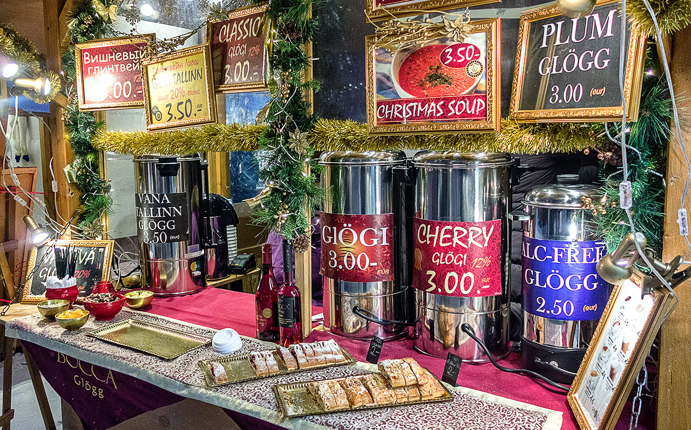
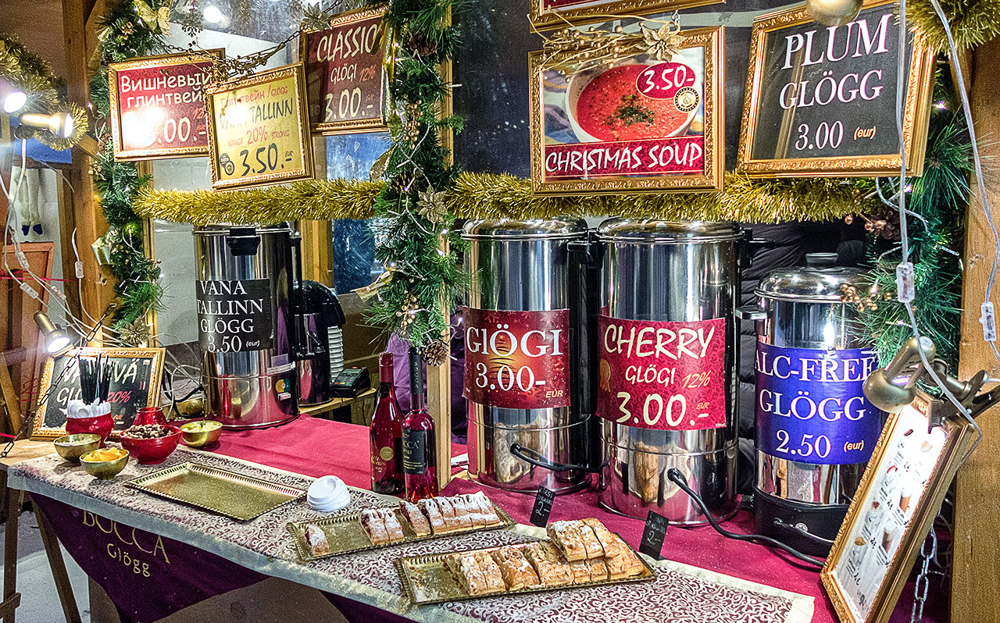

Description
Following the tradition, the Tallinn Christmas market will open its booths this year to give us the pleasure of enjoying a Christmas typical of a fairy tale. In Raekoja Plats, the Town Hall Square, stands a magnificent spruce, the symbol of Christmas. And our city is proud to be the first place in the world where a Christmas tree was erected: in 1441, no more No less!

In recent years, the market as a whole with the beautiful medieval buildings of Raekoja Plats, has become a symbol of Christmas and tourism, not only from Estonia, but throughout Europe, being described as one of the best Christmas markets in the world. continent and the world, receiving every year almost a million visitors from all over the globe. Children will have fun assured thanks to Santa Claus, who in his wooden house gives candy to children who best recite verses (sing and recite verses or poems is a tradition of our country shared with our Latvian and Lithuanian Baltic neighbors). In the different booths you can buy from high quality handicrafts to winter accessories such as gloves or scarves. And when you're a little sick of watching the stalls and you notice that your stomach rages furiously, you can satisfy your appetite with some ginger candy or taste delicious Estonian roasted dishes. You can also try the mulled wine, a typical drink from the Baltic countries, Scandinavia and Russia. Or the international hot chocolate, which always feels very good. The Christmas spirit is present, and reinforced by a special cultural program. On weekends, different music groups from Estonia and abroad will play on the market's stage, and every Sunday during the Advent period a candle will be lit, at the same time as the pastors of the Estonian and Russian Lutheran churches, and the Mayor of the city will give welcome speeches to the people in the plaza. And we will welcome the 2019 with an even more special program!
The Christmas Market of Tallinn welcomes everyone with open arms. Merry Christmas.
Calendar
The market opens its doors from November 16 to January 7 every day from 10:00 to 20:00. Hot drinks (hot wine) can be enjoyed from Sunday to Thursday until 10pm, and on Fridays and Saturdays until 11pm. Special Christmas program: Friday from 5:00 p.m. to 7:00 p.m., Saturdays and Sundays from 12:00 p.m. to 2:00 p.m. From December 2, Santa Claus welcomes children from Monday to Sunday from 12:00 a.m. 7:00 p.m.
 

Participants
Every weekend different folk groups from our country and abroad will participate, ready to give us a lively show. The participants are the following:
Friday 16th November:Viisuveeretajad (Estonia), Carolina (USA)
Saturday 17th November:Black and White (Ireland), Mariliis Jögeva (Estonia) Solas (Ireland), Tantsusarvikud (Estonia)
Sunday 18th November:Pühalepa (Estonia), Dance School RAPTI (Greece)
Friday 23rd November:Leesikad (Estonia)
Saturday 24th November:Juhukse (Estonia), Zahira (Estonia)
Sunday 25th November:Cantitores (Finland), Kirmas (Estonia)
Friday 30th November:Nömme (Estonia), Söleke (Estonia), Free Flow Studio (Estonia)
 Saturday 1st December:Moroshka (Russia), Tammed ja Toomed (Estonia), Harku Harakad (Estonia)
Saturday 1st December:Moroshka (Russia), Tammed ja Toomed (Estonia), Harku Harakad (Estonia)
Sunday 2nd December:Kopli (Estonia), Tallinn's Lutheran Choirs
Friday 7th December:Vöör ja Ahter (Estonia), Dance School RAPTI (Greece)
Saturday 8th December:Kuu (Estonia), Panter (Estonia), KT Stuudio (Estonia)
Sunday 9th December:Ellerhein (Estonia), Ingliskad (Estonia)
Friday 14th December:Köku (Estonia), VAT Stuudio (Estonia)
Saturday 15th December:Tuisuline (Estonia), Happy Feet (New Zealand), Jürid-Maarid (Estonia)
Sunday 16th December:Siki (Estonia), MYDANCE (Sweden)
Friday 21st December:Desiree (Estonia)
Saturday 22nd December:Kolgaküla Laneerid (Estonia), Free Flow Studio (Estonia)
Sunday 23rd December:Löoke (Estonia), Modus (Germany)
Friday 28th December:LTF (USA), Alhambra (USA), Asmarah (Estonia), Valeria Nikolajeva (Russia)
Saturday 29th December:Beatrice Nebis (Estonia), Aler (Georgia)
Sunday 30th December:Modus (Germany), Lili Adeni (Estonia)
Monday 31st December:New Years' Eve Special Program, Nömme Huvikooli (Estonia)
Friday 4th Januar:Terek (Russia), Jagody (Poland), Sakala Laululapsed (Estonia)
Saturday 5th Januar:Pääsuke (Estonia), Kodu (Estonia), Leigarid (Estonia)
Sunday 6th Januar:Koit (Estonia), Juri Zaljubovski (Russia), Mustad Kassi (Estonia).Market's closure.
Place
Raekoja Plats is in the Old Town's heart. Tourists who have stayed far from city center or outskirts inhabitants, the nearest urban bus and tram stops are located only 5 minutes walking from the square. Tram line 4 connects directly Raekoja Plats with the airport.
 Nearest bus stop: Viru (lines 21,21B,40,41,48,73)
Nearest bus stop: Viru (lines 21,21B,40,41,48,73)
 Nearest tram stop: Viru (lines 3 and 4)
Nearest tram stop: Viru (lines 3 and 4)